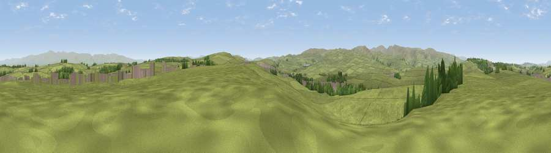

Viewpoint near Shap
#17355 in England · top 62% of its area beats it · near ShapThe view, rendered

A 360° render of this exact spot computed from the terrain model, tree cover and land cover — summer colours, afternoon light, calibrated against photographs of famous viewpoints. Real trees, hedges and buildings will differ in detail.
The panorama
Grey silhouette: terrain skyline in each direction (720 bearings, Earth curvature and refraction included). Dashed green: skyline with trees (+15 m) and buildings (+8 m) as obstacles. Blue strip: how far the ground is visible on each bearing.
Where the view opens
Wedge length = distance to the farthest visible ground on that bearing (vegetation-aware). Rings at 10, 25 and 50 km.
What fills the view
95% grassland · 3% woodland · 2% built-up
Angular shares of the visible panorama (visual magnitude), not map area. Landscape diversity 0.11 (0–1 Shannon).
Key numbers
More beautiful places nearby
The staircase of upgrades: each row has a higher view potential than everything closer. Driving times are estimates from straight-line distance, calibrated against real road routing — check an actual route before setting out.
| Place | Direction | Drive | Score |
|---|---|---|---|
| Windrigg Hill | NE · 2 km | ~6 min | 60.8 |
| Viewpoint near Shap | SE · 2 km | ~6 min | 63.3 |
| Viewpoint near Rosgill | NW · 3 km | ~8 min | 68.7 |
| Long Scar Pike [Coalpit Hill] | SSE · 6 km | ~12 min | 68.9 |
| Viewpoint near Keld | SW · 6 km | ~12 min | 69.9 |
| Viewpoint near Bampton | W · 6 km | ~13 min | 72.1 |
| Hugh's Laithes Pike | W · 7 km | ~14 min | 76.8 |
| Bampton Fell | W · 8 km | ~16 min | 77.7 |
54.53764, -2.66801 · source: screening · position refined by local search. Computed location — check access rights before visiting.